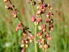

Sheep's sorrel
Rumex acetosella
Other names
Description
This weed is found abundantly in both Islands of New Zealand, on waste land and in open pastures. It grows up to 50cm tall, but usually tends to be close to the ground. Its roots are far spreading and branched. The leaves are lanceolate and the flowers are small and oval, the fruit or nut is small and enclosed by persistent tepals.
Similar plants
Common sorrel and most of the other 12 species of docks in NZ.
Distribution
Abundant throughout NZ. Likes open situations on poor soil.
Toxin
Oxalates are present in sheep sorrel, in the free state as oxalic acid, or more commonly as the soluble sodium, potassium and ammonium salts. Sometimes they are present as calcium oxalate.
Species affected
Mainly sheep. Acute oxalate poisoning has been associated with the grazing of sheep’s sorrel and has occurred when hungry stock have either been placed on sorrel infested paddocks or have been driven where sorrel is an abundant road side plant.
Clinical signs acute
Hypocalcaemia. Animals stagger and become recumbent, there is a nasal discharge, muscular spasm develops and breathing becomes difficult. Animals usually die in a coma. Clinical signs of renal tubular necrosis are oliguria, depression, vomiting, azotaemia, hyperkalaemia and cardiac failure. Oxalate toxicity in horses Horses, unlike ruminants, have no destructive mechanism for oxalates so that the regular ingestion of oxalate containing plants will cause a serious precipitation of calcium in the gut, resulting in an overall negative calcium balance. After several weeks or months of grazing oxalate containing plants, horses may develop a nutritional secondary hyperparathyroidism which produces osteodystrophia fibrosa. Horses cannot be reared satisfactorily on oxalate containing pastures.
Clinical signs chronic
Post mortem signs
Sheep severe pulmonary congestion with copious amounts of froth in the trachea and bronchi. There is a marked hyperaemia of the mucosa of the fore stomachs and intestines. The kidneys are usually swollen and have a pale cortex.
Diagnosis
History and clinical signs.
Differential diagnosis
Treatment
When the animal is seen soon after ingestion decontamination to reduce absorption is recommended. Activated charcoal or limewater (calcium hydroxide) to prevent oxalate absorption is useful. Supportive therapy for hypocalcaemia (calcium borogluconate) and nephrosis may be indicated unless advanced clinical signs are present which indicates a poor prognosis. The injection of calcium borogluconate causes a temporary response in some animals, which subsequently relapse and die due to acute renal failure.
Prognosis
Prognosis is good with early treatment but poor if clinical signs are advanced or severe.
Prevention
References
Conner H.E. The Poisonous Plants In New Zealand. 1992. GP Publications Ltd, Wellington
Cooper M R, Johnson A W. Poisonous Plants and Fungi in Britan: Animals and Human Poisoning. Her Majesty’s Stationary Office. London. 1998
Parton K, Bruere A.N. and Chambers J.P. Veterinary Clinical Toxicology, 2nd ed. 2001. Veterinary Continuing Education Publication No. 208
Surveillance (1974) 1(1): 14 Oxalate poisoning of sheep.
Surveillance (1975) 2(5): 15 Oxalate poisoning (cattle).
Surveillance (1976) 3(3): 16 Oxalate poisoning (sheep).
Surveillance (1982) 9(3): 25 Oxalate poisoning of ewes.
 plant |
|
|
|  |
||
|
|
||
|
|
|
|